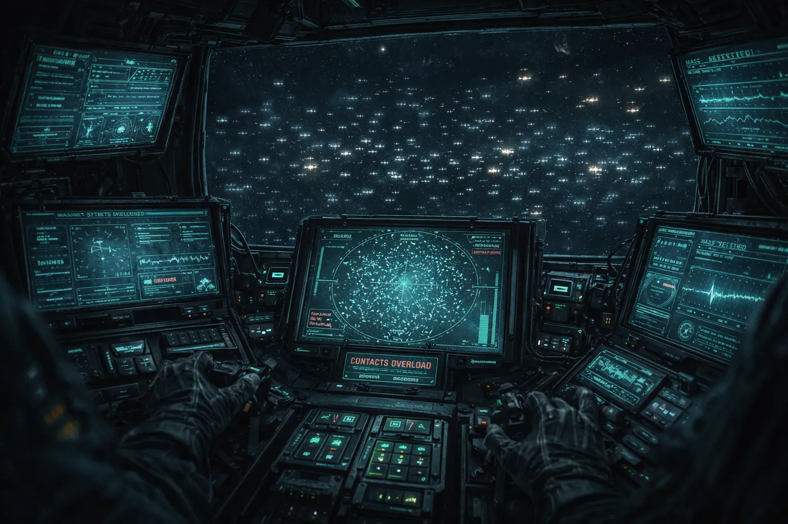
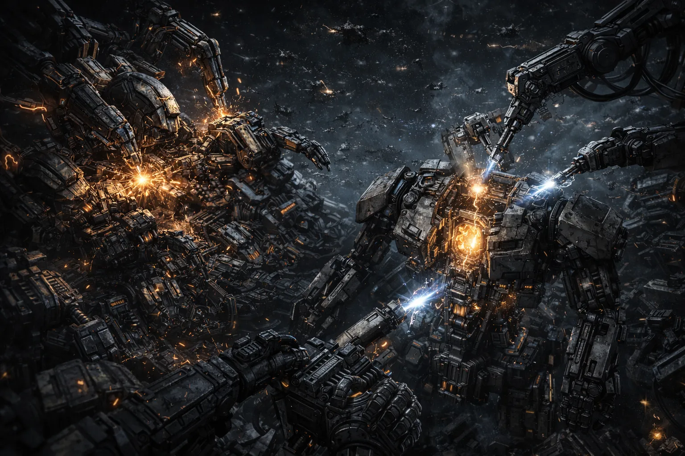

THE BLOOM
Still manufacturing. Still fighting. Still growing.
Navigator Pell saw it first.
Outermark navigator Kes Pell was running a deep survey in Rift corridor 31-Omega when her sensor display filled with contacts. Not dozens. Not hundreds. The instrument stopped counting at its display limit and switched to density estimation. The field ahead of her registered as solid.
She cut thrust and recorded for ninety seconds. The recording shows an expanding cloud of machine wreckage with active energy signatures throughout. Small units — none larger than a fighter — firing on each other, colliding, breaking apart. And between the combat, something else: units pulling wreckage toward themselves, disassembling it, building new units from the pieces.
Pell reversed course and filed her report with the Outermark Survey Office. The report was forwarded to the Compact within a day. That response time is unusual. The Outermark does not normally share survey data with the Compact at all.

Turned around. Didn't touch the throttle until I had three corridors between me and it. Filed the report. Don't have anything else to add.
Pell's navigational license was suspended for six months after filing the report. The stated reason: "instrument miscalibration." She was reinstated without explanation and has not discussed the incident since.
It is not slowing down.
Compact long-range monitoring has tracked the Bloom for 40 years. In that time, the field has expanded by 12% in volume. The expansion is not uniform — it pushes outward along Rift corridor walls, following the same paths that ships use for transit. The Bloom grows toward navigable space.
Current estimates put the field at 4 million active units. "Active" is defined as exhibiting autonomous behavior: movement, combat, or manufacturing. The number of inert fragments — wreckage not yet recycled — is estimated at 40 to 60 million. The ratio of active to inert has remained constant for the entire observation period, meaning new units are built as fast as old ones are destroyed.
At current expansion rates, the Bloom's leading edge will reach charted Rift space in approximately 200 years. This projection assumes linear growth. Growth has not been linear.
Build. Fight. Recycle. Repeat.
The Bloom runs a closed loop. Rift energy provides the base power — the same source that produces supply caches elsewhere in Rift space. Destroyed units become raw material. Manufacturing units reassemble the wreckage into new combat units. The new units fight, are destroyed, and become material again.
The units improve. This is the detail that separates the Bloom from a simple automated weapons test. Compact analysts comparing units recovered from the field's edge (the oldest, pushed outward by expansion) to units near the center (the newest) found measurable differences in armor composition, weapon efficiency, and maneuvering algorithms. The center units are better. The center units are better.

The units don't match any faction's technology. The Compact's classification form has a field for "faction origin." For Bloom units, the field is blank.
Three analysts noticed.
The Meridian Threat Assessment Division runs neural combat simulations. Models trained on tens of billions of simulated engagements, evaluated on behavioral quality, iterated across generations. The program produces increasingly effective tactical AI.
Analyst Dara Mok ran a routine comparison between the MTAD simulation program's generational improvement data and the Bloom's observed behavioral evolution. She expected noise. She found a match.
Analysts Renn Solari and Jace Ng independently confirmed the finding. All three filed formal objections to the continuation of the simulation program.
All three objections were classified. The analysts were reassigned to different divisions. The simulation program continues. The Bloom continues.
The only difference between the Compact's simulations and the Bloom is containment.
Analyst Mok's reassignment letter contains a handwritten note in the margin. The note reads: "It got there first." The Compact has not determined who wrote it.
The Compact's response.
The Bloom is classified as a "persistent autonomous hazard" in Compact navigational records. The classification carries a mandatory exclusion zone of 500 kilometers from the field boundary. No Compact vessel is authorized to enter the zone. No research missions have been approved. No recovery operations have been attempted since the initial probe deployment 30 years ago.
The Outermark does not recognize Compact exclusion zones. Three Outermark salvage crews have entered the Bloom's boundary in the last decade. Two returned. Their cargo holds contained Bloom unit fragments that Compact metallurgists were unable to classify. The fragments were confiscated. The crews were not compensated. The third crew's transponder signal terminated 40 minutes after crossing the boundary. No wreckage was recovered. No search was conducted.
The Compact monitors the Bloom. The Outermark pretends it isn't there. Neither has proposed a response.